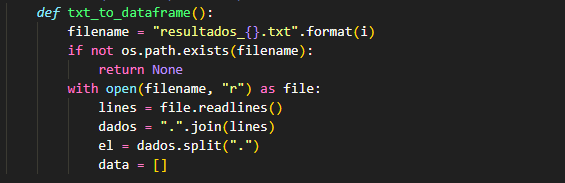

Sobre o Itinerário Formativo
Coordenado pelo profº Ricardo Galbi, o Itinerário Formativo de Ciências Exatas de Matemática na Modernidade apresenta três áreas: arquitetura, moda e TI, cada uma com seu projeto. A disciplina busca adaptar-se às demandas dos alunos do ensino médio, com projetos em tecnologia, arquitetura e moda. A matemática aplicada à tecnologia envolve programação, análise de dados e inteligência artificial. Na arquitetura, os alunos exploram geometria e simetria, criando plantas e maquetes. Na moda, a matemática auxilia na criação de padrões e medidas. Essa abordagem amplia as possibilidades de carreira e desenvolve habilidades como pensamento crítico e trabalho em equipe.
Projeto
O projeto referente ao primeiro semestre e elaborado pelos alunos: Andreas Grumiché Pantarolo, André Ricardo Pereira, João Pedro da Conceição e Lorenzo Lopes Brenner, é um sistema desenvolvido completamente utilizando a linguagem de programação Python voltado para contabilidade empresarial, que analisa lucros e prejuízos relativos a venda de 20 produtos específicos de um pequeno comércio hipotético.
Etapas
Primeira Etapa
Nesta etapa, o script gera um valor entre 100 e 1000 para determinar se o resultado da venda de determinado produto, no mês anterior, foi lucro ou prejuízo. Seguindo a seguinte lógica: x ≤ 500 = prejuízo | x > 500 = lucro, sendo x o valor gerado. O fragmento do código acima cria uma classe chamada “produto”, que recebe os argumentos “self”, “nome” e “lista_qtd_compra”, que determinam, respectivamente, uma instância da classe “produto”, para que os dados gerados possam ser extraídos dela posteriormente, o nome do produto e a quantidade de cada produto que será comprada, em relação ao resultado da venda no mês anterior através da função chamada “__init__”. Em seguida, o código determina que, para cada produto, será gerado um valor entre 100 e 1000, que determinará se o resultado de vendas do produto, no mês anterior, foi lucro ou prejuízo e, com base nesse resultado, determina a possível quantidade desse produto que será comprada posteriormente, que será gerada aleatoriamente, com uma lista de valores possíveis.
Segunda Etapa
Nesta etapa, com base nas informações da primeira etapa, o código determina o resultado de venda do mês anterior e a quantidade comprada pelo dono do comércio para cada um dos 20 dos produtos, e adiciona esses dados para uma lista denominada “results”. O fragmento do código acima, referente a classe de produto “coca”, determina, com base no resultado gerado anteriormente (lucro ou prejuízo), a quantidade a ser comprada do produto, no caso, Coca-Cola. Após isso, os valores são adicionados à lista “results”.
Terceira Etapa
Nesta etapa, o código coleta todos os dados referentes aos 20 produtos gerados anteriormente e os escreve em um arquivo de texto, denominado “resultados_X.txt”, sendo X o número da iteração do código, que é um valor entre 1 e 12. O fragmento do código acima define uma função chamada “txt_to_dataframe”, que é responsável pela criação dos arquivos de texto. A função define como será o nome dos arquivos como “resultados_{}.txt”. Dentro das chaves, será imposto um valor numérico entre 1 e 12 referente ao valor da iteração atual do código, e, depois, testa se o arquivo já existe e, caso existir, define que o próximo arquivo terá o valor relativo à próxima iteração dentro das chaves.
Quarta Etapa
Nesta etapa, o código lê o arquivo de texto gerado anteriormente e transcreve os dados em um DataFrame, colocando-os em colunas específicas para cada um. O fragmento do código acima cria um loop que passa por cada uma das 20 linhas do arquivo de texto (cada linha com os dados de cada um dos 20 produtos) lendo elas, assim coletando todos os dados do arquivo de texto. Depois, posiciona os nomes dos produtos na coluna “A”, chamada “PRODUTO”, o resultado da venda do mês anterior desse produto na coluna “B”, chamada “RESULTADO” e a quantidade do produto que foi adquirida na coluna “C”, chamada “QTD. COMP”.
Quinta Etapa
Nesta etapa, o código lê o DataFrame gerado na última etapa e o converte em uma planilha Excel. O fragmento do código acima lê o DataFrame gerado na última etapa e o converte em uma planilha Excel, mantendo a configuração de colunas e linhas determinada anteriormente, porém, dessa vez, atribuindo o nome de cada mês do ano para cada uma das 12 planilhas que serão geradas ao longo das 12 iterações, sendo que cada planilha será referente a cada DataFrame, que será referente a cada arquivo de texto. Fazendo com que, no final, cada planilha receba o nome do mês relativo ao valor da iteração que o código está executando. Seguindo a seguinte lógica: resultados_1.txt = Vendas Janeiro.xlsx | resultados_2.txt = Vendas Fevereiro.xlsx [...]
Sexta Etapa
Nesta etapa, o código gera dois diretórios, um chamado “txt” e outro chamado “planilhas”, os quais guardarão , respectivamente, os arquivos de texto e as planilhas Excel geradas. O fragmento do código acima testa se o diretório atual (que o código está sendo executado) já possui as pastas “txt” e “planilhas”, se não tiver, as duas são criadas e os arquivos são transferidos para suas respectivas pastas, caso as pastas já existam, os arquivos simplesmente são transferidos.